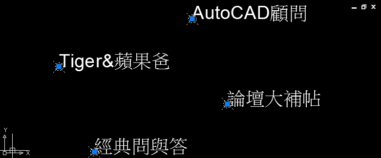

任務：把圖面中所有「文字」物件，在文字插入點中放置點(POINT)。


※其實還有很多快速方式可以達成，希望大家可以先分享自己的作法，再來看以下的「方式一」快速解決方式！
練習完成後請說明「步驟」、「貼圖」，回答的會員朋友可以得到（威望值+6）。
方式一：
範例中使用較為進階的方式，透過「資料萃取」+「腳本檔」方式佈點，以下操作供大家參考，有其他方式也請會員朋友們一同提出分享喔！
代碼:
POINT 2379.4179,1437.5231
POINT 2354.6868,1428.6014
POINT 2372.8862,1453.3571
POINT 2348.1552,1444.4353
▼影片展示： https://youtu.be/I7aFPy8rGog